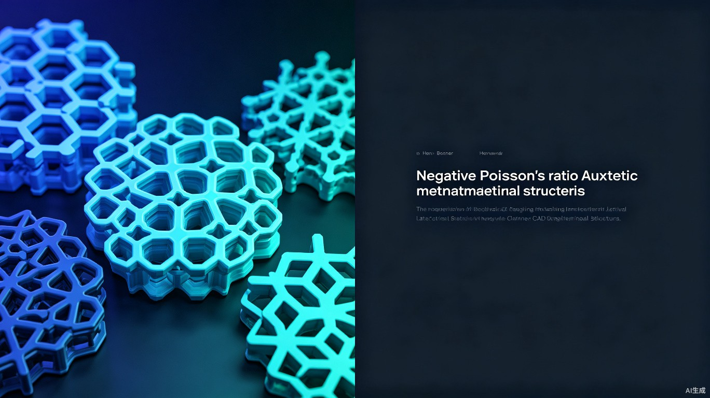

一款集成于 SolidWorks 的 AI 增强参数化设计插件，支持自然语言输入与拖拽调节， 一键生成 15+ 种负泊松比胞元点阵结构，将建模时间从数周缩短至分钟级。
负泊松比材料潜力巨大，但工程落地面临三大核心障碍
工程师在 SolidWorks 中反复绘制、阵列十字形/凹角六边形胞元，参数调整后需完全重建模型，一个专利十字形结构建模周期长达 2 周。
无统一胞元库与互锁连接设计工具，不同构型间切换需重新建模，3D 打印适配性差，支撑结构常导致打印失败。
CAD 建模与 CAE 仿真之间数据流转依赖人工，迭代一次需数小时，严重制约超材料构型创新与优化效率。
AuxetiCAD 将 AI 自然语言交互、参数化几何引擎与 SolidWorks 深度集成，打造一站式的负泊松比结构设计平台
内置十字形（专利）、凹角六边形、双箭头、手性、反手性、星形等构型，支持自定义胞元扩展，一键切换比对不同构型的力学响应。
通过 Web 式参数面板实时拖拽调节壁厚 t、臂长 L、角度 θ 等参数，3D 预览即时更新，所见即所得。
支持 简单立方（SC）、体心立方（BCC）、面心立方（FCC） 等多种点阵排列，自动计算胞元间距与边界裁剪。
自动生成胞元间互锁连接几何，内置 3D 打印可行性检查（最小壁厚、悬垂角度、支撑需求），杜绝打印失败。
支持导出 SolidWorks 宏、STL 及 Abaqus 输入文件，无缝衔接仿真与制造流程。
LLM 解析用户描述（如"生成泊松比 -0.5 的十字形胞元 SC 阵列"），自动映射至参数组合，零学习成本。
四层架构：前端交互 → AI 解析 → 几何引擎 → 智能预测
flowchart TB
subgraph 前端["🖥️ 前端交互层"]
A1["Web 参数面板
(TRAE IDE 开发)"]
A2["Three.js 3D 预览
实时渲染胞元结构"]
A3["自然语言输入框
LLM 意图解析"]
end
subgraph AI层["🧠 AI 智能层"]
B1["LLM 解析引擎
描述→参数映射"]
B2["GNN 代理模型
预测等效泊松比 ν"]
B3["吸能效率预测
能量吸收曲线"]
end
subgraph 引擎层["⚙️ 几何引擎层"]
C1["Python 几何核心
OpenCASCADE"]
C2["SolidWorks API
参数化特征树"]
C3["胞元阵列引擎
SC/BCC/FCC"]
end
subgraph 输出层["📤 输出层"]
D1["SolidWorks 宏"]
D2["STL 3D打印"]
D3["Abaqus 模型"]
end
A1 --> C1
A2 --> C1
A3 --> B1
B1 --> C3
C3 --> C1
C1 --> C2
C2 --> D1
C2 --> D2
C2 --> D3
B3 --> B2
B2 -.->|反馈优化| C3
C1 --> B2
基于 TRAE IDE 开发的 Web 式参数面板 + Three.js 3D 实时预览，支持拖拽、滚轮缩放与旋转。
LLM 解析自然语言 → 参数组合；集成轻量 GNN 代理模型实时预测等效泊松比 ν 与吸能效率。
Python 核心基于 OpenCASCADE 进行几何运算，通过 SolidWorks API 生成参数化特征树，支持完整编辑历史。
15+ 种内置胞元，覆盖主流负泊松比结构类型
| 胞元构型 | 类型 | 等效泊松比 ν 范围 | 相对密度 | 吸能效率 (kJ/kg) | 3D 打印难度 |
|---|---|---|---|---|---|
| 十字形 (专利) | 内凹结构 | -0.3 ~ -0.8 | 0.15 ~ 0.40 | 12.5 | 低 |
| 凹角六边形 | 内凹结构 | -0.2 ~ -0.6 | 0.10 ~ 0.35 | 10.8 | 低 |
| 双箭头 | 内凹结构 | -0.4 ~ -1.0 | 0.12 ~ 0.30 | 14.2 | 中 |
| 手性 (Chiral) | 旋转刚体 | -0.5 ~ -1.2 | 0.08 ~ 0.25 | 8.6 | 中 |
| 反手性 (Anti-Chiral) | 旋转刚体 | -0.3 ~ -0.9 | 0.10 ~ 0.28 | 9.1 | 中 |
| 星形 (Star) | 内凹结构 | -0.6 ~ -1.5 | 0.05 ~ 0.20 | 15.8 | 高 |
| 旋转正方形 | 旋转刚体 | -0.4 ~ -0.8 | 0.15 ~ 0.35 | 11.2 | 低 |
| 折纸型 (Origami) | 折纸/铰链 | -0.2 ~ -1.0 | 0.08 ~ 0.22 | 13.5 | 高 |
从高校科研到工业制造，AuxetiCAD 推动"设计-仿真-制造"闭环落地
在论文研究中快速生成不同胞元结构进行对比实验，从构思到获得仿真结果缩短至 30 分钟，加速超材料领域学术创新。
在汽车碰撞吸能、航空防护等场景中，批量生成点阵填充结构，直接导出 Abaqus 模型，省去手动建模与网格划分的重复劳动。
内置可打印性检查确保模型无悬垂、无薄壁问题，直接输出 STL 文件，将客户的超材料定制需求转化为可制造产品。
AuxetiCAD 在参数化能力、AI 集成与跨平台输出方面具有显著优势
| 对比维度 | AuxetiCAD | nTopology | Materialise Magics | 手动建模 (SolidWorks) |
|---|---|---|---|---|
| 负泊松比胞元库 | ✅ 15+ 种 | ⚠️ 需自定义 | ❌ 不支持 | ❌ 手动绘制 |
| AI 自然语言输入 | ✅ LLM 驱动 | ❌ 无 | ❌ 无 | ❌ 无 |
| 实时泊松比预测 | ✅ GNN 代理 | ⚠️ 需 FEM | ❌ 无 | ❌ 无 |
| SolidWorks 集成 | ✅ 原生插件 | ❌ 独立软件 | ❌ 独立软件 | ✅ 原生 |
| 3D 打印可行性检查 | ✅ 自动 | ⚠️ 部分 | ✅ 完善 | ❌ 无 |
| 学习成本 | 极低（自然语言） | 高 | 中 | 中 |
| 价格 | 免费/低价 | $$$$ | $$$ | $$$ |
分阶段推进，从核心插件到生态平台
完成 15+ 胞元库、参数面板、SolidWorks 宏导出、基础阵列引擎。发布 SolidWorks 插件 Beta 版。
LLM 自然语言解析上线、GNN 代理模型预测等效泊松比、Three.js 3D 实时预览。支持 STL 导出。
Abaqus 模型导出、3D 打印可行性检查、互锁连接自动生成。支持自定义胞元扩展接口。
胞元社区市场、多 CAD 平台支持（Fusion 360, CATIA）、云端协同设计、批量优化与实验设计（DOE）。
将负泊松比结构建模周期从数周缩短至分钟级，CAE 前处理效率提升 80%+，显著降低研发人力成本。对于典型企业每年可节省数百工时。
为高校和科研机构提供标准化、可复现的超材料设计工具，加速新型胞元构型探索与论文产出，推动负泊松比材料学术研究。
推动负泊松比材料在生物植入体、防护装备、缓冲包装等领域的工程落地，提升产品安全性与人体适配性，造福社会民生。
填补国内负泊松比结构 CAD 工具空白，推动"设计-仿真-制造"一体化闭环，助力中国超材料产业自主创新与竞争力提升。